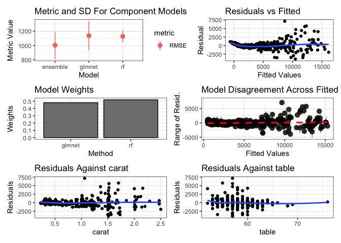
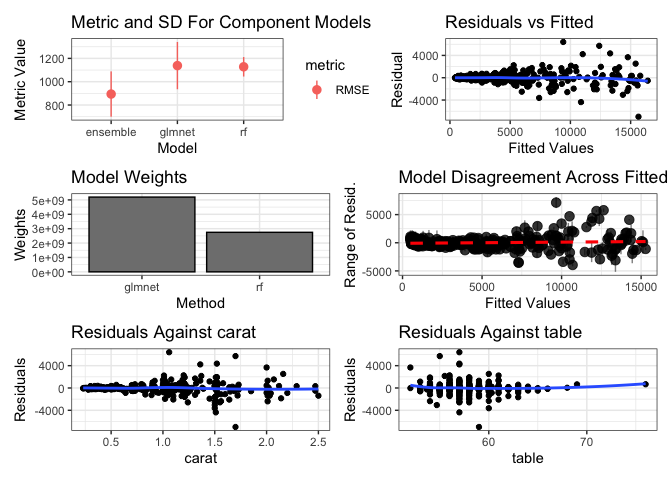

caretEnsemble is a framework for stacking models fit with the caret package.
Use caretList to fit multiple models, and then use caretStack to stack them with another caret model.
First, use caretList to fit many models to the same data:
data(diamonds, package = "ggplot2")
dat <- data.table::data.table(diamonds)
dat <- dat[sample.int(nrow(diamonds), 500L), ]
models <- caretEnsemble::caretList(
price ~ .,
data = dat,
methodList = c("rf", "glmnet")
)
print(summary(models))
#> The following models were ensembled: rf, glmnet
#>
#> Model accuracy:
#> model_name metric value sd
#> <char> <char> <num> <num>
#> 1: rf RMSE 1127.974 83.50596
#> 2: glmnet RMSE 1138.137 202.80472Then, use caretEnsemble to make a greedy ensemble of these models
greedy_stack <- caretEnsemble::caretEnsemble(models)
print(greedy_stack)
#> The following models were ensembled: rf, glmnet
#>
#> caret::train model:
#> Greedy Mean Squared Error Optimizer
#>
#> No pre-processing
#> Resampling: Cross-Validated (5 fold)
#> Summary of sample sizes: 400, 400, 400, 400, 400
#> Resampling results:
#>
#> RMSE Rsquared MAE
#> 1003.391 0.9357974 577.2895
#>
#> Tuning parameter 'max_iter' was held constant at a value of 100
#>
#> Final model:
#> Greedy MSE
#> RMSE: 1010.776
#> Weights:
#> [,1]
#> rf 0.52
#> glmnet 0.48
ggplot2::autoplot(greedy_stack, training_data = dat, xvars = c("carat", "table"))
You can also use caretStack to make a non-linear ensemble
rf_stack <- caretEnsemble::caretStack(models, method = "rf")
#> note: only 1 unique complexity parameters in default grid. Truncating the grid to 1 .
print(rf_stack)
#> The following models were ensembled: rf, glmnet
#>
#> caret::train model:
#> Random Forest
#>
#> No pre-processing
#> Resampling: Cross-Validated (5 fold)
#> Summary of sample sizes: 400, 400, 400, 400, 400
#> Resampling results:
#>
#> RMSE Rsquared MAE
#> 894.1208 0.9518165 455.1419
#>
#> Tuning parameter 'mtry' was held constant at a value of 2
#>
#> Final model:
#>
#> Call:
#> randomForest(x = x, y = y, mtry = param$mtry)
#> Type of random forest: regression
#> Number of trees: 500
#> No. of variables tried at each split: 2
#>
#> Mean of squared residuals: 800137.3
#> % Var explained: 94.96
ggplot2::autoplot(rf_stack, training_data = dat, xvars = c("carat", "table"))
Installation
Install the stable version from CRAN:
install.packages("caretEnsemble")Install the dev version from github:
devtools::install_github("zachmayer/caretEnsemble")There are also tagged versions of caretEnsemble on github you can install via devtools. For example, to install the previous release of caretEnsemble use:
devtools::install_github("zachmayer/caretEnsemble@2.0.3")This is useful if the latest release breaks some aspect of your workflow. caretEnsemble is pure R with no compilation, so this command will work in a variety of environments.
Package development
This package uses a Makefile. Use make help to see the supported options.
Use make fix-style to fix simple linting errors.
For iterating while writing code, run make dev. This runs just make clean fix-style document lint spell test, for a quicker local dev loop. Please still run make all before making a PR.
Use make all before making a pull request, which will also run R CMD CHECK and a code coverage check. This runs make clean fix-style document install build-readme build-vignettes lint spell test check coverage preview-site.
First time dev setup:
run make install from the git repository to install the dev version of caretEnsemble, along with the necessary package dependencies. # Inspiration and similar packages: caretEnsemble was inspired by medley, which in turn was inspired by Caruana et. al.’s (2004) paper Ensemble Selection from Libraries of Models.
If you want to do something similar in python, check out vecstack.
Code of Conduct:
Please note that this project is released with a Contributor Code of Conduct. By participating in this project you agree to abide by its terms.